Merak ettiğim soruları çalışan şeylere çeviriyorum.
Sonra ölçüyorum. İşe yaramadıysa onu da yazıyorum. Aşağıda 50 proje var. Kırk biri şu an internette canlı, on üçü kendi kendini güncelliyor.
Önce bunlara bak
Bir dakikan varsa en çok önereceklerim. Kalanların hepsi hemen aşağıda.
Bir insanın adını taşıyan her 100 sokaktan 4 tanesi kadın.
OpenStreetMap'teki 231.889 sokağı tek tek saydım. %40'ının adı bile yok, yalnız numarası var. En çok Atatürk'ün adı geçiyor (1.114), kadınlarda Zübeyde Hanım (124). Senin ilinde durum ne?
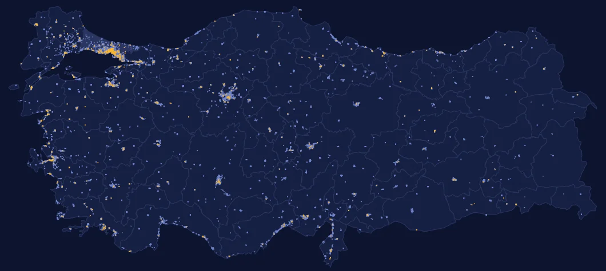
Türkiye'de her gün ortalama 10 yeni düzenleme yayımlanıyor
2000'den bugüne 10.608 Resmî Gazete sayısı, 99.697 düzenleme. Hangi kanun kaç kez değişti, doğduğun gün ne yayımlandı?

> enflasyon
Bir kelime yaz, TBMM'de 1996'dan bu yana yıl yıl ne kadar konuşulduğunu gör. 3.731 birleşim, 69 milyon kelime. Yorum yok, yalnızca sayılar. Temizlenmiş metinler Hugging Face'te açık veri seti.

Türkiye sorularında büyük yapay zekâ 98 aldı. Bilgisayarımdakiler 49.
Wikidata'dan otomatik üretilmiş 1.209 soru: hangi ilçe hangi ilde, hangi şehir daha yüksekte, plaka kodu, doğum yılı. 10 model, her soru iki farklı ifadeyle, güven aralıklarıyla. Kendin de deneyebilirsin.
Kürk Mantolu Madonna'yı dinle, okunan cümleyi takip et.
Telifi düşmüş Türk klasikleri, ücretsiz: 1 roman ve 18 hikâye, 10 saat. Metinler ilk baskılardan, ses açık lisanslı bir modelden; anlaşılırlığı Whisper'la ölçüldü.
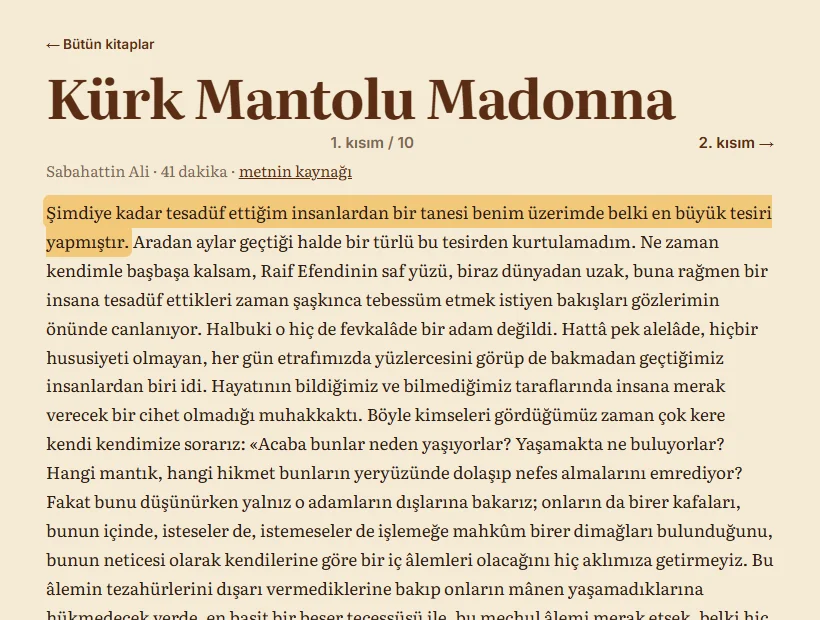
Yapay zekâ kendi kodunu denetlerse daha iyi olur mu? Olmadı.
Türkçe kodlama ajanı, gizli testlerle ölçüldü. Meta AI Developer Hackathon gönderimi. Kazanç çıkmadı; nedenini de ölçüp yazdım.
Hiçbir şey bilmeden doğdu. 21 dakikada Türkçe yazmayı öğrendi.
4,8 milyon parametrelik, sıfırdan eğitilmiş bir dil modeli. Sitede senin tarayıcında çalışıyor; "yaş" çubuğuyla eğitimin her anına dönüp nasıl yazdığını görebilirsin. Asistan değil: söylediklerinin çoğu uydurma, ama öğrenmenin kendisi görünüyor.
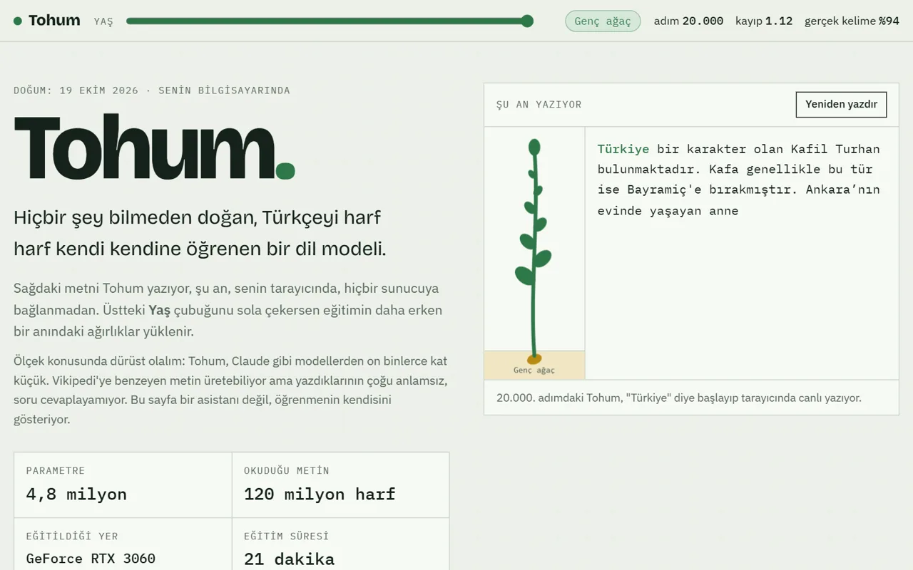
Kimse diğerini duymadan kaydediyor.
Arkadaşlarınla bir film sahnesini seslendir: herkese bir karakter düşer, finali birlikte ilk kez izlersiniz. Gerçek oyuncularla: 939 dublaj, 10.830 replik. Yanında 23 ücretsiz araç.
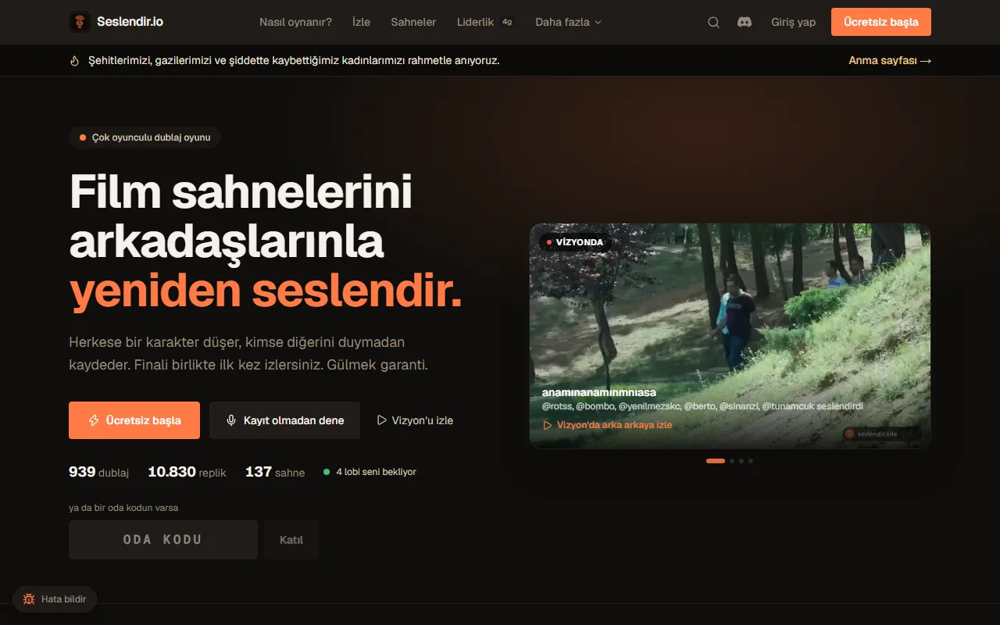
Daha fazla canlı site
Her biri tek bir soruyu cevaplıyor ve her biri kendi kimliğiyle tasarlandı. Kaynak, yöntem ve sınırlar her sitenin altında yazıyor.
= 0,7 sigara
3 Kasım'da İstanbul'da nefes almak. Bakanlığın 210 istasyonundan il il PM2.5, kaba ama akılda kalan bir benzetmeyle.

Aynı sepet bugün kaç lira?
Kendi sepetini kur, kendi enflasyonunu TÜFE'yle yan yana gör.

1 dk geç
Hattını yaz: otobüsün planına ne kadar uyuyor? İETT'nin canlı konum verisinden, dakikada bir.

Bugün 34 kez sallandı
Uluslararası kataloglardan her deprem: harita, senin ilin ve 1990'dan bu yana büyükler. Çoğunu yalnızca cihazlar fark ediyor.
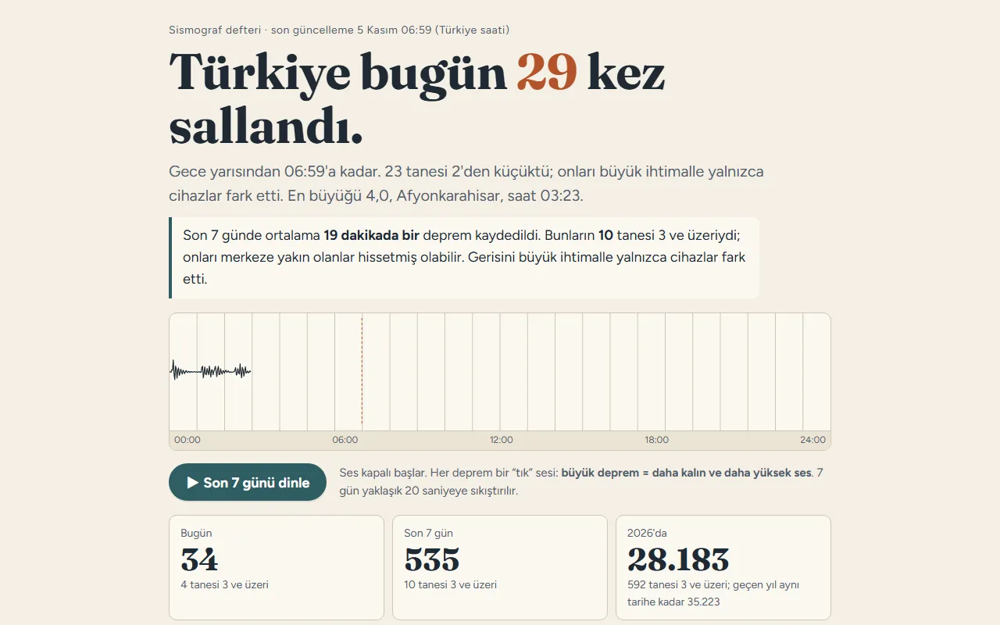
Gece ışığı 12 yılda %122 arttı
Uydudan 2012 ve 2024 geceleri yan yana: çizgiyi kaydır, şehrin nereye büyüdüğünü ilçe ilçe gör. 973 ilçenin 967'sinde ışık %10'dan fazla arttı.
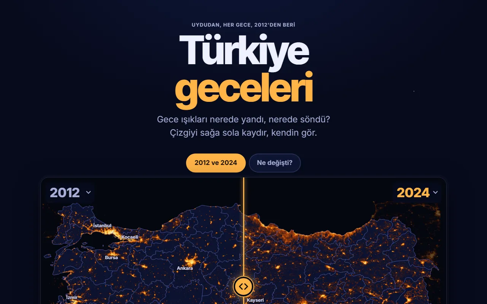
12 uçak, İstanbul'un üstünde
Açık uçuş verisiyle şehrin üstündeki uçaklar: harita, en kalabalık saatler, İstanbul Havalimanı ile Sabiha Gökçen.
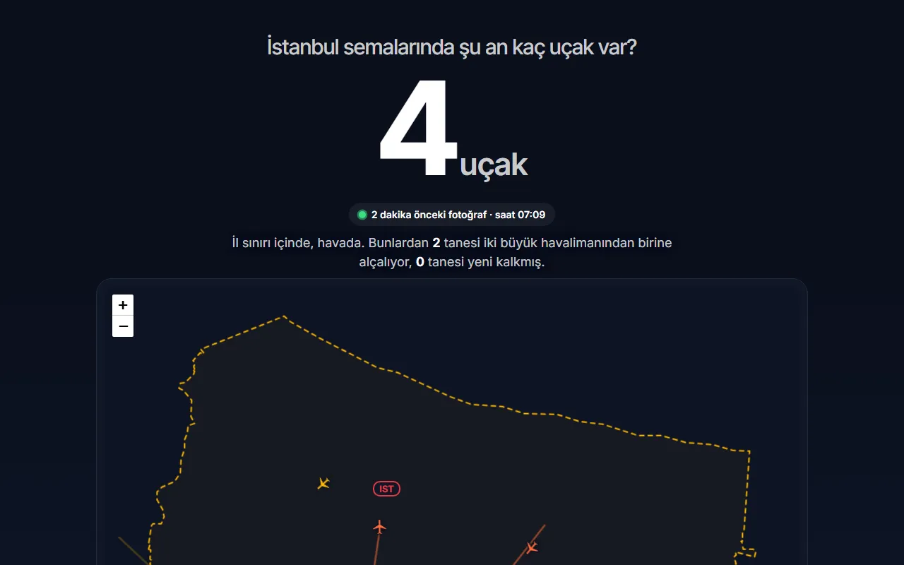
Ocak'ta gelen asgari ücret, bugünün fiyatlarıyla %17,8 eridi.
Maaşını ve fırınındaki ekmek fiyatını yaz: kaç ekmek ettiğini, on yılın testere dişlerini ve market rafındaki karşılığını gör. Resmî asgari ücret ve TÜİK verisiyle, her ay kendini güncelliyor.
Net asgari ücret, bugünün parasıyla · 2016–2026
Uzay istasyonu bu gece başının üstünden geçiyor.
Şehrini seç: Uluslararası Uzay İstasyonu ve Tiangong hangi saatte, hangi yönden geçecek, çıplak gözle görülür mü? Hesap tarayıcında yapılıyor; 54 geçişte bağımsız bir gökbilim kütüphanesiyle 1–2 saniye içinde aynı.
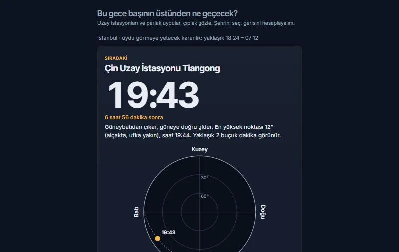
+1,9° 1982'den bu yana Türkiye kıyılarında yıllık ortalama deniz sıcaklığı
41 kıyı noktası, NOAA'nın uydu ölçümleri, 1981'den bugüne her gün. Kendi koyunu seç, doğduğun yılla karşılaştır.
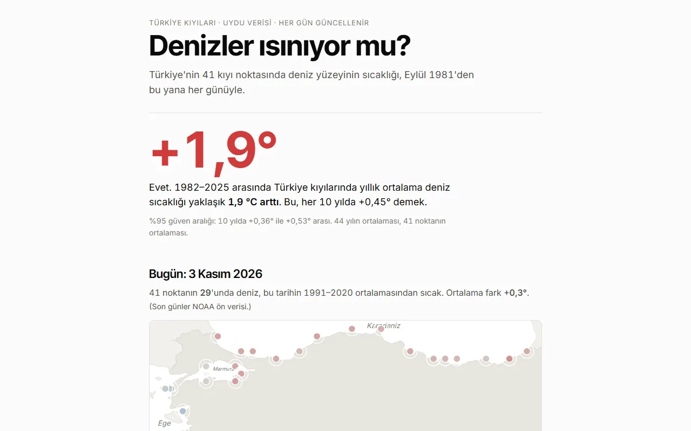
Arapça Vikipedi'de okunan her 144 sayfadan biri bir Türk dizisi.
465 Türk dizisinin Vikipedi sayfası 87 dilde, 2015'ten bugüne: hangi dil hangi diziyi ne zaman keşfetti? İzlenme değil, merak.
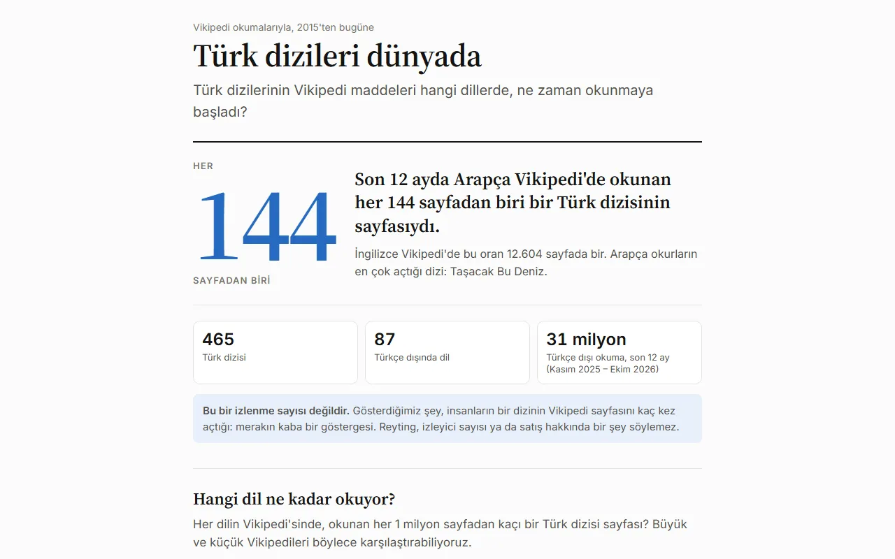
31.886 hektar: 2021 Manavgat yangınında uydudan ölçülen yanmış alan
NASA uydularının 2001'den bu yana Türkiye'de gördüğü her sıcak nokta ve en büyük yangınlarda Sentinel-2'nin önce/sonra görüntüleri.
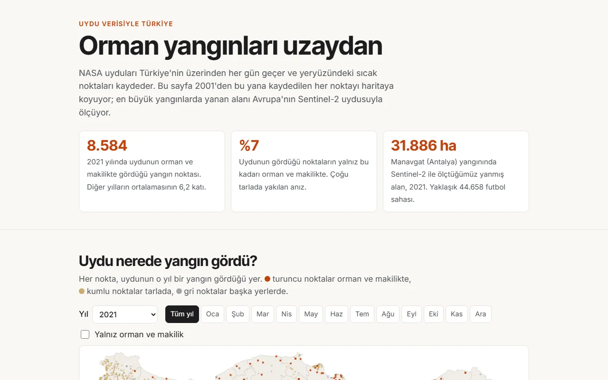
%85 İstanbul barajlarının su yüzeyi, en dolu hâline göre
Sentinel-2 uydusundan 2017'den bugüne 10 baraj: su kaplı alan, önce/sonra uydu fotoğrafı. Alan ölçülüyor, hacim değil.
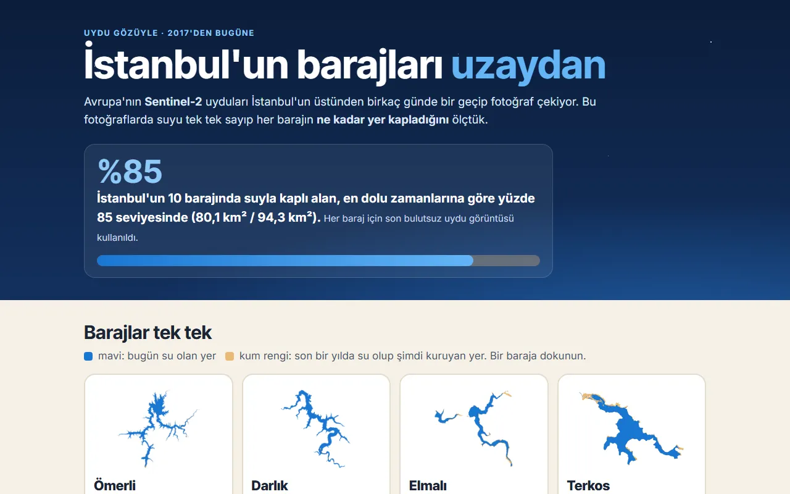
Birden merak edilenler
Türkçe Vikipedi'de her gün birdenbire çok okunan maddeler, 2015'ten bugüne. Doğduğun gün Türkiye neyi merak etti?
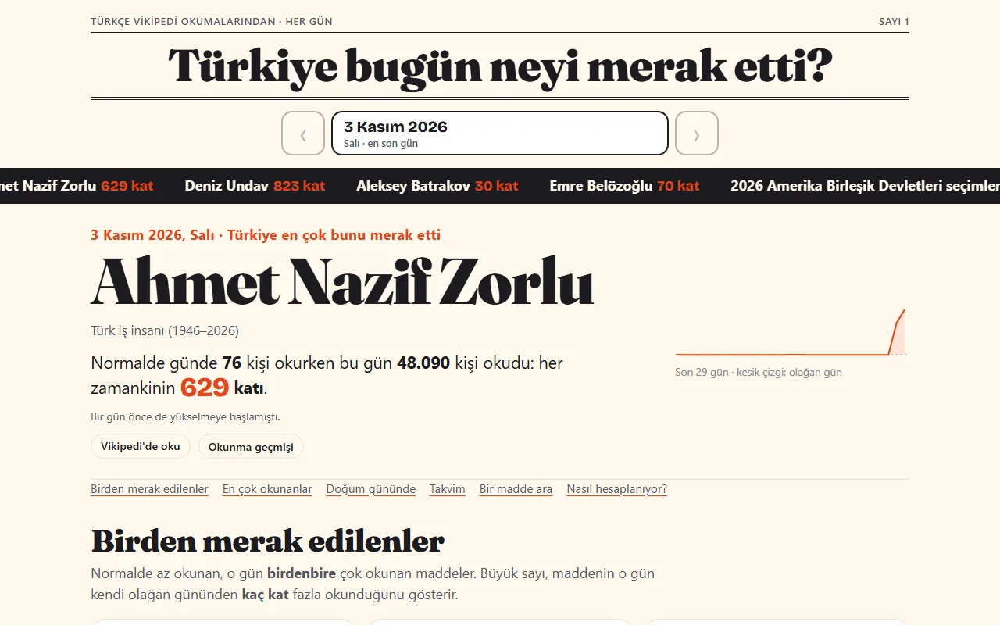
Her gün bir il gizleniyor. Kaç ipucunda bulursun?
Günlük oyun. İpuçları kendi sitelerimin gerçek verisinden: son bir yıldaki depremler, uyduların gördüğü yangınlar, yıllık hava kirliliği. Her yanlış tahminde yeni ipucu, uzaklık ve yön. Sonuç, il adını vermeyen renkli karelerle paylaşılıyor.
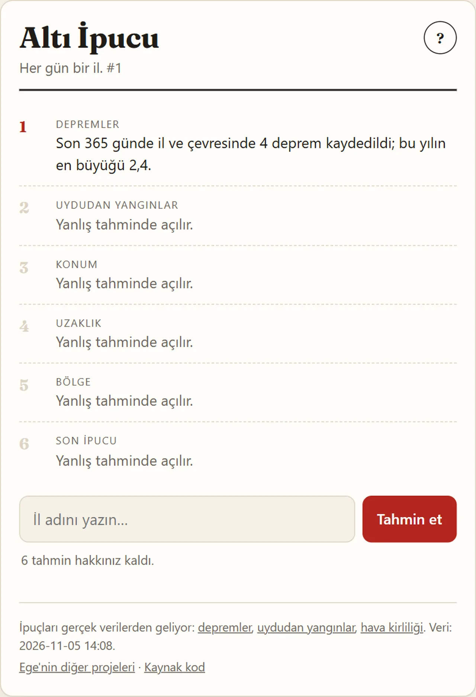
Canlı sitelerimin dünkü verisinden. Paragrafı Meta'nın Muse Spark modeli yazdı; yayımlanmadan önce içindeki her sayı kaynağıyla program tarafından tek tek eşleştirildi.
Bütün projeler
Türkiye verisi, yapay zekâ deneyleri, aileme ve tanıdıklarıma yaptığım uygulamalar, oyunlar. Her kartta neyi yaptığım ve gerçekte ne çıktığı yazıyor; damga sonucu özetliyor.
Çoğu portfolyo bunları saklar göstermez.
Deneylerimin bir kısmı işe yaramadı. Ama her birinde "neden" sorusunun ölçülmüş bir cevabı var, ve bence en çok şeyi bunlardan öğrendim.
Nasıl çalışıyorum
Her proje tek bir cümleyle başlıyor: "Bugün nefes almak kaç sigara?" Cevaplamayan özellik eklenmiyor.
Gizli testler, elle denetlenmiş örneklemler, güven aralıkları. Sayı yoksa iddia da yok.
Annem ve babam için oyun uygulaması, eniştem için tişört atölyesi, esnaf için site. 70 yaşında biri de kullanabilmeli.